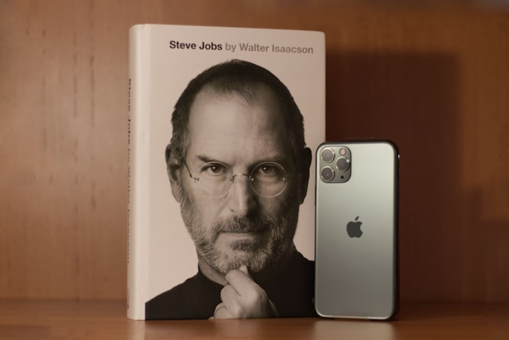

Steve Jobs
Was an American businessman, inventor, and investor best known for co-founding the technology giant Apple Inc.

Steve Jobs was
also the founder of NeXT and chairman and majority shareholder of Pixar.
He was a pioneer of the personal computer revolution of the 1970s and 1980s,
along with his early business partner and fellow Apple co-founder Steve Wozniak.
He was a pioneer of the personal computer revolution of the 1970s and 1980s,
along with his early business partner and fellow Apple co-founder Steve Wozniak.
History Timeline
-
1974 - 1985 :
- Steve Jobs co-founded Apple Computer.
- Apple released the commercially succesful Apple II Personal computer.
- Jobs Introduced the Macintosh computer with a graphical user interface
-
1985 - 1997 :
- Jobs was fired from Apple & founded NeXT Inc.
- He returned to Apple as CEO in 1997.
-
1997 - 2011 :
- Jobs introduced revolutionary products like the iMac, iPod, iPhone, & iPad.
- In 2011, Steve Jobs passed away, leaving behind an inspiring legacy.
"Stay Hungry, Stay Foolish."